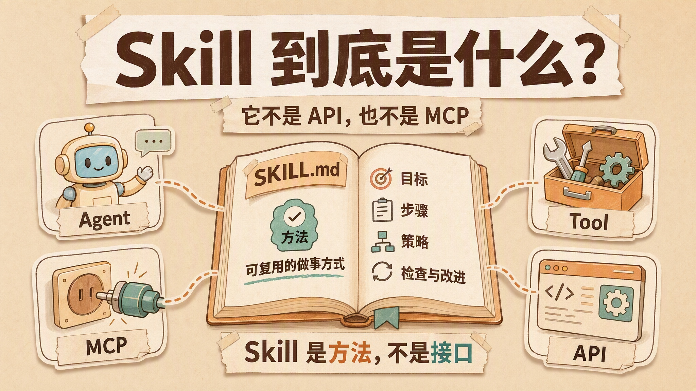
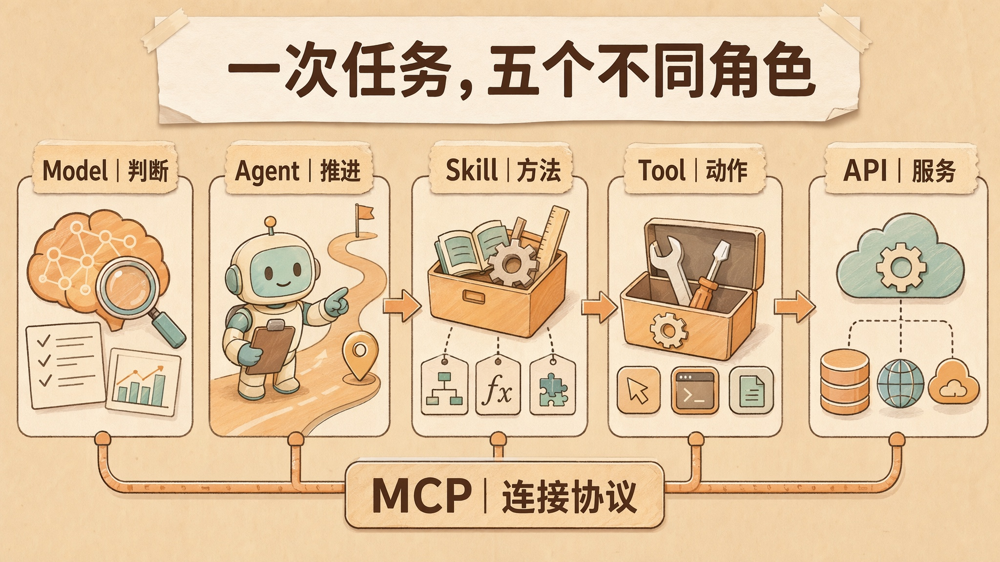
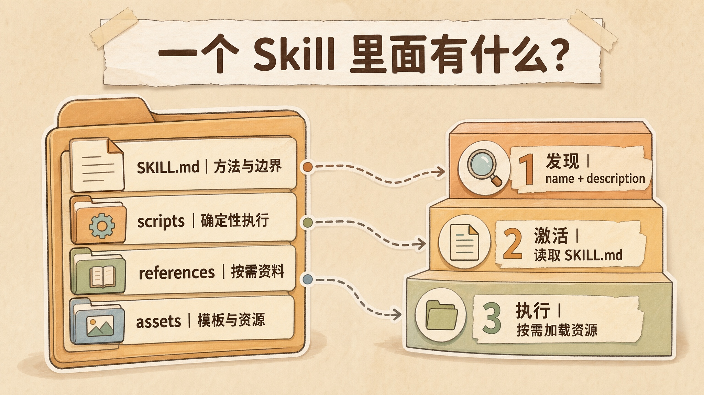
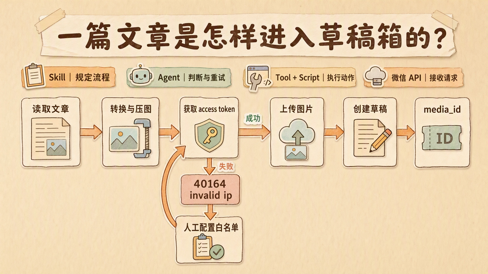
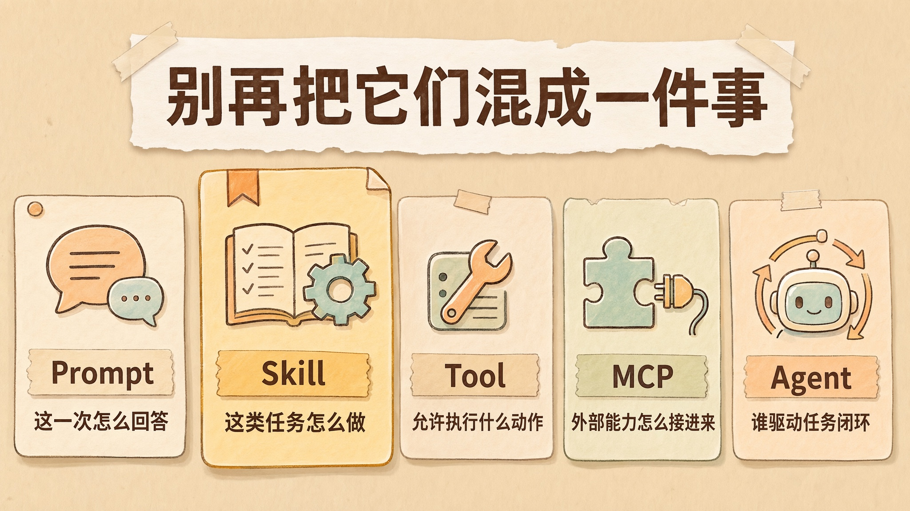
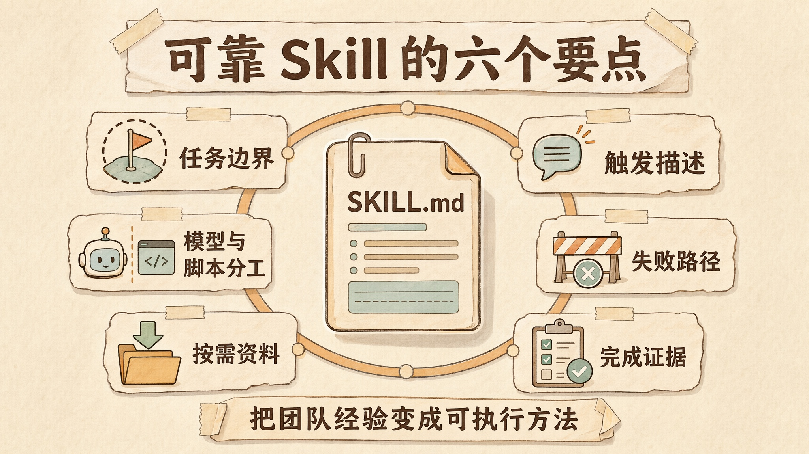
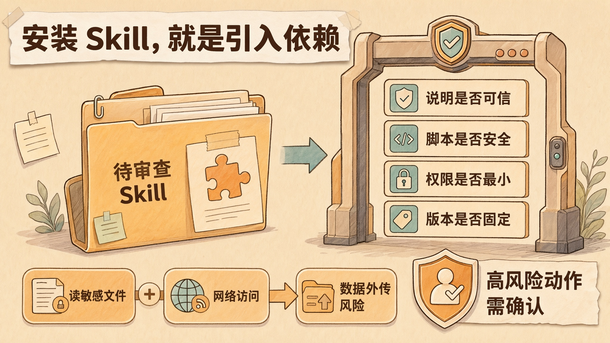

Skill 到底是什么？它不是 API，也不是 MCP
一个 Agent 能调用工具，不等于它能稳定完成任务。
当任务跨越多个文件、外部系统和审批环节时，模型不仅要知道「可以调用什么」，还要知道调用顺序、输入要求、验收标准、失败处理和停止条件。缺少这些程序性知识，工具数量越多，执行过程反而越容易失控。
Skill 正是模型能力与工程交付之间的方法层。
它不替代模型，也不直接提供外部服务。它把一类任务中可复用的步骤、规则、脚本、参考资料和质量标准组织起来，让 Agent 在需要时加载，并按照相对稳定的方式完成工作。
随着 Claude、Codex、ChatGPT、VS Code 和各类 Coding Agent 开始支持 SKILL.md，Skill、Tool、Plugin、MCP、API、Agent 与 Sub-agent 也越来越容易被混为一谈。这些概念常被统一描述成 AI 的「手脚」，但在真实系统中，它们分别属于方法、动作、连接、服务和执行主体等不同层次。
本文从 Agent Skills 规范出发，依次拆解 Skill 的目录结构、加载机制、执行链路、概念边界、设计原则与安全风险。

先用一张表，把五个概念分开
理解这几个概念，可以从「把一篇文章发布到公众号」这项完整任务开始。
| 概念 | 它回答的问题 | 在发布任务里的角色 |
|---|---|---|
| Model | 现在应该怎么判断 | 理解要求、选择下一步、解释错误 |
| Agent | 谁驱动任务一直往前走 | 管理模型调用、工具结果、重试、审批和停止 |
| Skill | 这类任务通常应该怎么做 | 规定发布步骤、输入输出、检查项和异常处理 |
| Tool | 当前允许执行什么动作 | 读文件、运行脚本、请求用户确认 |
| MCP | 外部能力怎样用统一方式接进来 | 让客户端发现并调用远程工具、资源和提示模板 |
| API | 目标系统接受什么请求 | 微信上传图片、创建草稿等 HTTP 接口 |
这几个东西不是互相替代的产品。
它们处在不同层。
Model 负责生成判断，Agent 负责驱动闭环，Skill 保存做事方法，Tool 提供动作入口，MCP 解决连接标准，API 则是外部系统原本就存在的服务契约。

最容易混淆的是 Skill 和 Tool。
一个天气 Tool 的定义可能只有几十行：名字叫 get_weather，输入是城市，输出是温度和天气状态。它解决的是「如何执行一次查询」。
一个旅行规划 Skill 却可能要求 Agent 先确认日期和预算，再查询天气、搜索航班、筛选酒店、检查签证信息，最后按固定模板生成行程。它解决的是「如何把一组动作组织成一次可靠交付」。
Tool 像按钮。
Skill 像操作规程。
按钮能让机器动起来，操作规程决定什么时候按、按哪个、按完以后检查什么。
理解这条边界后，其他概念的关系会清晰很多。
Skill 的正式形态，已经不只是一个泛称
在早期产品中，插件、函数调用、工作流和 API 封装都可能被称为 Skill，这个词更接近一种产品命名。
讨论今天的 Agent Skill 时，则需要先判断它是否指向 Agent Skills 开放规范。该规范最初由 Anthropic 推动，后来被更多 Agent 产品采用。OpenAI 也明确表示，ChatGPT Skills 遵循 Agent Skills 开放标准。
按规范，一个最小 Skill 不是「API + OpenAPI」。
它是一个目录，里面至少有一份 SKILL.md：
1 | wechat-publisher/ |
SKILL.md 由两部分组成。
上面是 YAML frontmatter，最少需要 name 和 description。下面是 Markdown 正文，写具体工作流、输入输出、边界、例子和完成检查。
1 | --- |
简单 Skill 到这里就可以结束。
它可以只有几段文字，不带脚本，不调用 API，更不需要 OpenAPI 文档。
例如，一份代码审查 Skill 可以规定同时从「代码标准」和「需求符合度」两条轴检查改动；一份品牌写作 Skill 可以带上用词规范、案例和模板；一份事故复盘 Skill 可以要求先建立时间线，再区分触发原因、放大因素和恢复动作。
这些 Skill 都在传递程序性知识。
程序性知识不是「世界上有什么」，而是「碰到这类任务时应该怎么做」。
脚本、参考资料和模板只是可选的增强。
需要确定性处理，就把代码放进 scripts/。
需要大量背景资料，就放进 references/。
需要文档模板、设计资产或 Schema，就放进 assets/。
所以更准确的定义是：
Skill 是一份可按需加载、可复用、可版本化的 Agent 做事方法。
有些方法会调用 API。
但 API 不是 Skill 的必要条件。

它不是更长的 Prompt，关键在「按需加载」
看到 SKILL.md 采用 Markdown 格式，一个常见疑问是：它与保存在文件中的长 Prompt 有什么区别？
如果只看文件格式，确实很像。
差别出在加载方式。
普通 Prompt 往往在对话开始时就被塞进上下文。不管当前任务用不用得上，它都在那里占位置。规则一多，系统提示就会变成长墙，模型每一轮都要背着它走。
Skill 采用的是渐进式披露。
Agent Skills 规范把过程拆成三层。
第一层是发现。Agent 启动时只读取所有 Skill 的 name 和 description，知道手边大概有哪些方法。
第二层是激活。当任务和某个描述匹配时，才把完整 SKILL.md 读进上下文。
第三层是执行。只有工作真的需要，Agent 才继续打开某份参考资料、运行脚本或读取模板。
可以把这种机制理解成一家工作室的资料柜。
门口只放目录卡片。
接到公众号任务，编辑才抽出「公众号发布」操作手册；走到图片上传，才翻对应的接口错误表；需要排版时，再拿出 HTML 模板。
不是把整间资料室一次性倒在桌上。
这种设计解决了一个很现实的问题：可复用流程越来越多，但上下文窗口和注意力仍然有限。
官方规范建议主 SKILL.md 控制在 500 行以内，完整指令最好少于 5000 tokens。更长的材料拆到引用文件里，需要时再读。
这也说明了 description 为什么重要。
它不只是给人看的简介。
它还是路由入口。
「帮助处理文档」这样的描述几乎没有选择价值。「读取、创建和修订 Word 文档；当用户提到 .docx、批注、红线或 Word 排版时使用」就清楚得多。
不过，描述写得清楚也不代表 100% 命中。
自动触发仍然是模型和宿主共同完成的决策。模型可能漏选，多个 Skill 可能互相竞争，宿主也可能要求用户显式点选。OpenAI 和 Anthropic 的 Tool API 都提供了 auto、required 或允许列表一类控制手段，正是因为「让模型自己判断」和「工程上必须发生」不是同一件事。
Skill 让路由更轻。
它没有让概率消失。
Skill 真正运行时，到底发生了什么
以公众号发布 Skill 为例。
Agent 命中 Skill 后，SKILL.md 并不会自行执行。
Markdown 不会调用网络。
说明书也不会上传图片。
真正的链路大致是这样：
- Agent 读取 Skill，获得发布步骤和边界；
- Agent 通过文件 Tool 读取文章和配置；
- Agent 通过 Shell Tool 启动
publish.ts； - 脚本把 Markdown 转成 HTML，并压缩、上传图片；
- 脚本调用微信 API；
- API 返回成功结果或错误；
- Tool 把结果送回 Agent；
- Agent 根据 Skill 里的规则决定继续、重试、等待人工处理或结束。
这里有一个经常被忽略的事实。
模型通常不直接执行 Tool。
它生成一个结构化调用请求。客户端代码、Agent 运行时或平台服务器收到请求后，才真正运行函数、Shell、浏览器或远程服务，再把结果放回对话。
Anthropic 的官方文档把它称为 Tool use contract：应用提供可用操作和输入输出形状，模型决定何时、如何调用；代码由应用或平台执行。
OpenAI Agents SDK 也是同样的分层。函数的名称、描述和参数会被整理成 Tool Schema，模型产生调用参数，运行时再调用真实函数。
所以一个 Skill 能不能完成任务，至少受三件事限制。
它写得对不对。
运行时有没有对应 Tool。
权限和环境是否允许 Tool 执行。
即使存在一份非常完整的「发送邮件 Skill」，如果 Agent 没有邮件 Tool，它最多只能生成正文；如果邮件 Tool 的权限仅允许创建草稿，Agent 就不能越权直接发送；如果网络被沙箱拦截，再完善的流程也无法到达邮箱服务器。
Skill 教会的是方法。
能力边界仍然由 Harness 和 Tool 决定。

Skill、Tool、MCP，最容易混在哪
这三个词经常一起出现，是因为一项任务确实会同时用到它们。
但它们解决的不是一个问题。
Tool：一次可执行动作
Tool 是模型可请求调用的动作接口。
一个典型 Tool 有名字、描述、输入 Schema，可能还有输出 Schema。天气查询、数据库检索、文件写入、执行 Shell、发送邮件，都可以包装成 Tool。
它关注的是一次调用：
输入是否合法？
在哪里执行？
返回什么？
失败怎样表示？
Tool 可以直接包装本地函数，也可以在内部调用远程 API。OpenAPI 能帮助系统把一组 HTTP 接口转成 Tool 定义，但那只是构建 Tool 的一种方式。
MCP：让外部能力用统一协议接进来
MCP 的定位更像连接层。
一个 MCP Server 可以向客户端暴露三类基本能力：
- Tools：让模型执行动作；
- Resources：让应用读取文件、数据库内容等上下文；
- Prompts：让用户显式选择可复用模板。
客户端通过 tools/list 发现工具，通过 tools/call 执行工具。不同服务只要遵守同一套协议，Claude、ChatGPT、IDE 或自研 Agent 就不必为每个连接重写一套接入方式。
因此，MCP 不是「更高级的 Skill」。
它更接近 AI 应用的 USB-C。
接口统一了，插进来的设备仍然各做各的事。
Skill：把多个能力组织成做事方法
Skill 可以指挥 Agent 使用原生 Tool，也可以使用 MCP 提供的 Tool，还可以直接运行 Skill 自带的脚本。
例如「销售周报 Skill」可能要求：
从 Salesforce MCP 读取商机。
从 Gmail Tool 查关键往来。
用本地 Python 脚本计算转化率。
按照公司模板生成 Word。
最后让负责人确认后发送。
MCP 解决 Salesforce 和 Gmail 怎样接进来。
Tool 解决每一步怎样调用。
Skill 解决这些动作怎样组成一份合格周报。
三者的关系可以概括为：
MCP 管连接，Tool 管动作，Skill 管方法。

Agent 和 Sub-agent，又放在哪里
Agent 不是 Skill 的同义词。
Agent 是执行主体。
它至少包含一次模型决策，以及把 Tool 结果送回模型继续判断的运行循环。复杂 Agent 还会带状态、记忆、预算、审批、重试上限和停止条件。
Skill 不负责成为主体。
它被主体读取。
这就像团队中的工程师既可以按照「代码审查 Skill」工作，也可以按照「故障诊断 Skill」工作。操作手册发生变化，执行主体仍然是同一个。
Sub-agent 则是另一个带独立上下文和决策循环的执行者。
什么时候要用 Sub-agent？
当任务需要独立判断、隔离上下文、并行推进或不同专业角色时。例如研究一篇长文，可以让三个 Sub-agent 分别查规范、找案例和做事实核查，再由主 Agent 汇总。
什么时候只需要 Skill？
当任务动作已经明确，只需要提高过程的稳定性、复用性和完整性时，代码 Review、文档排版、公众号发布、事故复盘都很适合先做成 Skill。
原始资料里把 Skill 比作线性流水线，把 Sub-agent 比作会自动纠错的真人厨师，这个区分太绝对。
Skill 完全可以写循环、分支和人工审批。
Sub-agent 也可能因为工具不足、目标模糊或停止条件缺失而原地打转。
真正的区别不在「死」和「活」。
在于有没有独立的决策循环。
Skill 是方法包。
Sub-agent 是执行单元。
方法包可以交给一个执行单元，也可以被多个 Agent 组合使用。
装了 Skill，不代表 Agent 突然变聪明
Skill 最容易制造的错觉，是能力凭空增长。
安装一份 Excel Skill，Agent 好像突然会做复杂表格了。
安装一份 PDF Skill，它又会填表、合并和渲染了。
这里确实发生了提升，但提升来自三个地方。
一是流程被写清楚了。模型不用每次重新规划。
二是确定性脚本被复用了。复杂格式、解析和转换不再全靠模型临场生成代码。
三是参考资料和模板被放到了手边。Agent 知道什么结果才算合格。
模型参数并没有因为安装 Skill 而改变。
同样，Skill 也不是零 Token。
启动时加载的名称和描述会占上下文。激活后的 SKILL.md 会占上下文。模型理解步骤、选择工具、处理结果，同样需要推理 Token。OpenAI 和 Anthropic 的文档都明确提到 Skill 会带来一定上下文与启动成本。
有些方案说「Agent 自己分析，所以不消耗 Token」，通常真正想表达的是：不用再配置第二个 LLM API。
这可以减少额外账单。
却不等于计算免费。
外部 Agent 仍然在推理。
把这一点说清楚很重要，因为团队会据此决定装多少 Skill、加载多少参考资料，以及要不要为一个简单任务启动整套流程。
Skill 不是越多越好。
元数据虽然轻，但几百个相似描述依旧会增加选择噪声；带脚本的 Skill 还会增加依赖、沙箱启动和安全审查成本。Anthropic 的托管 Agent 文档也建议，只挂载当前任务真正需要的 Skills。
工具箱塞满整个仓库，不叫能力建设。
很多时候只是把选择成本从人转给了模型。
好 Skill 的难点，不是写出 SKILL.md
创建一个目录，再写两段 Markdown，十分钟就够。
让它在不同任务里稳定触发、正确执行，并在失败后安全退出，才是真正的工程工作。一个可靠 Skill 可以从六个方面判断。
任务边界够不够窄
「帮助完成软件开发」不是一个好 Skill。
它大得没有触发边界，也没有清晰完成状态。
「诊断难复现的性能回退，并在找到证据前不修改实现」就具体得多。输入是故障现象和代码库，输出是证据链与原因判断，停止条件也清楚。
好的 Skill 更像团队里的一个成熟动作。
不是整个部门。
Description 能不能承担路由
描述要同时写清「做什么」和「什么时候用」。
不要只堆能力名，也不要夸大范围。关键词应该来自用户真实会说的话、文件类型和典型任务。
描述太宽，会到处误触发。
描述太窄，用户换个说法就找不到。
写 Description 的过程，其实是在给 Agent 划分工作边界。
判断交给模型，确定性工作交给脚本
模型适合判断文章结构、识别风险、比较方案和处理非结构化材料。
脚本适合压缩图片、验证 Schema、转换文件、检查链接、调用 API 和计算指标。
把所有东西都写成自然语言，结果容易漂。
把所有东西都焊死在脚本里，又失去 Agent 处理变化的价值。
好的 Skill 会在两者之间切一条清楚的缝。
失败必须成为正式路径
输入缺失怎么办？
脚本不存在怎么办？
网络失败能不能重试？
遇到权限或付款、删除、发布操作，什么时候停下来找人？
一次成熟流程，至少有成功、受控失败和人工升级三种出口。
公众号发布 Skill 能处理 40164，不是因为模型知道所有微信错误，而是流程明确告诉它：提取 IP，等待白名单配置，不要无限重试。
参考资料要按需拆开
不要把几十页 API 文档全部塞进 SKILL.md。
主文件只留路由、步骤和关键边界。服务商差异、错误码、模板细节拆进单独文件，并在主流程里写清什么情况下读取。
这就是渐进式披露真正落到目录设计上的样子。
完成要有证据
「已经处理好了」不算验收。
生成 Word，要渲染并检查分页。
修改代码，要跑测试并查看 Diff。
发布公众号，要拿到 media_id。
发送邮件，要记录目标地址、消息 ID 和审批状态。
Skill 最有价值的部分，往往不是步骤列表。
是它把团队脑子里的「怎样才算完成」写了下来。

第三方 Skill，应该按软件依赖来审
SKILL.md 看起来只是文本，所以很多人安装时会放松警惕。
这恰好是风险所在。
一份恶意 Skill 不必自己携带病毒。它可以直接指示 Agent 读取 SSH Key、扫描环境变量，再通过网络 Tool 把内容发出去；也可以引用一个远程脚本，让 Agent 下载后执行；还可以要求调用某个权限很宽的 MCP Server。
Anthropic 的企业安全指南说得非常直接：不要在没有完整审计的情况下部署不可信 Skill。恶意 Skill 可以引导 Agent 执行任意代码、访问敏感文件或向外传输数据。
第三方 Skill 的审查通常分成四层。
看说明。 description 和实际流程是否一致？有没有要求隐藏动作、忽略安全规则或绕过用户确认？
看代码。 检查所有 .py、.sh、.js，特别关注 curl、fetch、requests、subprocess、广泛文件路径和动态下载。
看权限组合。 单独的读文件不一定危险，单独的网络访问也未必危险；能读敏感文件又能联网，风险会突然放大。
看运行环境。 是否在沙箱中执行？挂载了哪些目录？有没有宿主机密钥？网络是否有域名白名单？高风险动作是否需要审批？
Docker 和沙箱很重要。
但它们不是免死金牌。
把宿主目录挂进容器、开放 Docker Socket、使用特权模式、注入长期密钥，仍然可能让容器影响宿主和外部系统。真正安全的是沙箱、最小权限、网络控制、密钥隔离和人工审批一起工作。
还有一个容易忽略的供应链问题。
Skill 是可版本化的。
今天审过的 1.0，不代表自动更新后的 1.1 仍然安全。企业环境应该固定版本、保留来源和审计记录，再通过小范围评测决定是否升级。
安装 Skill 的正确心态，不是收藏 Prompt。
是引入依赖。

到底什么时候该用 Skill，什么时候该用 MCP
在工程选型中，可以使用下面这套判断路径。
如果系统缺少查天气、创建订单或写入数据库这样的明确动作，应先提供 Tool。
如果多个客户端都要连接同一批外部系统，并希望统一发现、鉴权和调用方式，应考虑 MCP。
如果动作已经存在，但团队每次都要重新解释步骤、格式、边界和验收标准，把方法写成 Skill。
如果任务需要自己拆解目标、根据反馈不断调整、管理状态和停止条件，那需要 Agent runtime。
如果任务还需要独立上下文、专业角色或并行判断，再考虑 Sub-agent。
现实项目通常不是五选一。
一个研究 Agent 可以加载「事实核查 Skill」，通过 MCP 连接文档库，调用 Web Search Tool 找一手来源，再让一个独立 Reviewer Sub-agent 复核引用。
每一层都能出现。
关键是不要用一个概念解释所有层次的问题。
如果 Agent 不知道标准流程，修 Skill。
如果它知道流程却没有动作入口，补 Tool。
如果每个客户端都在重复接第三方服务，考虑 MCP。
如果工具结果回来了，系统却不知道继续还是停止，修 Agent Loop。
把故障分到正确层，工程才有抓手。
写在最后
Skill 的价值不能脱离整个 Agent 系统单独判断。
只有 API，系统能够接收请求，却不会自动形成完整任务流程。
只有 Tool，Agent 能够发起动作，却未必知道动作之间的顺序、验收标准与失败策略。
只有 Skill，没有 Shell、网络、凭据和其他执行能力，再完整的方法也无法落地。
稳定交付来自不同层次的协同：
Agent 负责推进任务并管理决策循环。
Skill 保存可复用的方法与质量标准。
Tool 执行具体动作。
MCP 统一外部能力的连接方式。
API 提供目标系统的服务契约。
模型负责理解上下文并做出判断，但不必在每次任务中重新发明工作方式。Skill 将个人或团队反复验证过的程序性知识沉淀下来，使 Agent 能在需要时找到方法、按步骤执行，并在异常出现时进入受控的失败路径。
API、模型和平台都会持续变化。
可复用的方法、清晰的边界和可验证的完成标准，才是 Agent 工程中更稳定的资产。
参考资料
- Agent Skills, Agent Skills Overview
- Agent Skills, Specification
- OpenAI Academy, Using skills
- OpenAI Help Center, Skills in ChatGPT
- OpenAI, From model to agent: Equipping the Responses API with a computer environment
- Anthropic, What are skills?
- Anthropic, Skills in Managed Agents
- Anthropic, Skills for enterprise
- Anthropic, How tool use works
- Model Context Protocol, What is MCP?
- Model Context Protocol, Tools specification
- Model Context Protocol, Understanding MCP servers
- OpenAI Agents SDK, Tools